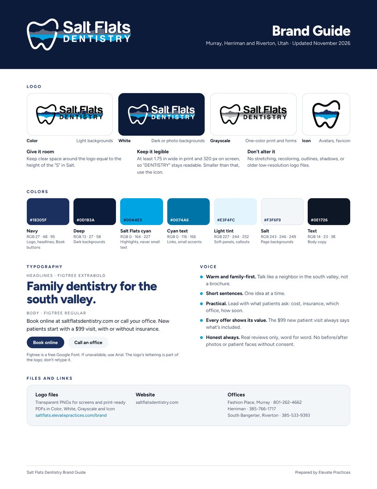

Everything on one page.
How to use the logo, the seven brand colors, the Figtree type pairing and how Salt Flats Dentistry sounds. Hand it to anyone who makes signs, shirts, ads or social posts.
Logo files.
Sharp, transparent PNGs for screens and print-ready PDFs. Use the color logo on light backgrounds and the white one on navy or photos.


Colors.
Taken from the logo. Navy is the one color for Book buttons. Cyan is for highlights, never small text.
Navy#1B305F
Deep#0D1B3A
Salt Flats cyan#00A4E3
Cyan text#0074A6
Light tint#E3F4FC
Salt#F3F6F9
Text#0E1726
White#FFFFFF